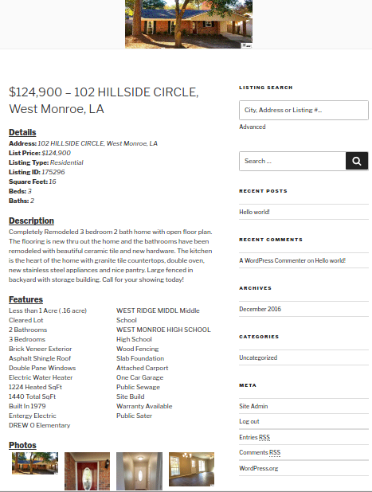

Contact: support@timitek.com
Version: 1.0.3
Demo: http://wordpress.timitek.com
Instantly add real estate listing data to your website. This WordPress plugin will allow your listings, from multiple feeds, to appear within your site as native content, treated just like other content on your website. All of this is done through an integration with GetRETS® from timitek, llc.
GetRETS is an API that provides integration with RETS based MLS's through a RETSful API.
Settings - GetRETS
Create your own search page using the [getrets-search] shortcode
Take advantage of the advanced listing search search widget

View listing searches natively in your site like any other post

View a detailed post for listings with detailed information and photos

Please ensure you meet the following requirements:
Note - It might be necessary to provide ftp information for this method.
wp-content/plugins directory of your WordPress installation.Note - Ensure the Plugin has been activated in the WordPress administration dashboard before continuing.
Access the GetRETS settings from the WordPress administrators dashboard.
From the WordPress administration dashboard, select Settings - GetRETS.
There are two settings for you to configure.
You have successfully installed GetRETS and visitors to your site can immediately start using your site to search for realty listings using the regular search features of WordPress!
GetRETS integrates with the default WordPress search immediately out of the box after setup. However, if you would like to enable a more advanced search, the GetRETS plugin also includes a Search Widget, which once enabled, will allow visitors to your site to specify additional constraints to search listings by.
In addition to the generic keyword search, the following constraints are made available;
Now your sites visitors can perform more advanced listing searches!
In addition to the the search widget, the GetRETS plugin provides a [getrets_search] shortcode for you to use in a post or page to create a more customized search page. This short code provides a search form with the same advanced searching functionality as the widget.
Place the following line in any page / post.
[getrets_search]
The post content detail elements are marked up with several CSS classes that can be used to customize the look and feel of the listing details post.
getrets-content
This is class used for the main div that surrounds all of the content for the listing details post.
Each of the 4 sections are wrapped in a div that has it's own class.
getrets-detailsgetrets-descriptiongetrets-featuresgetrets-features getrets-title
This is the title for each of the 4 sections.
getrets-detail
Each entry in the Details section has a div around it with thegetrets-detail class applied to it.
getrets-label / getrets-value
This getrets-label class is applied to each label used for each detail item in the Details section, as well as the Provided By: label.
Likewise, the getrets-value class is applied to each value after the label.
getrets-photo
Each photo has the getrets-photo class applied to it.
For further information examine the markup at;
wp-content/plugins/getrets/views/frontend/content.php
In addition to extending the the listing details post via custom styles in your theme, you can also extend functionality via JavaScript.
Each listing detail post will attempt to inject listing detail information and a list of images for the listing into a global function if your theme enables it.
To take advantage of this create a public function with the following syntax, that will be called when a listing detail post is displayed.
/**
* Function that is called by GetRETS when a listing
* detail post is loaded.
*
* listing - JSON object representing the details
* of the listing
* images - an array of image urls associated
* with this listing
*/
function listingLoaded(listing, images)
{
alert(listing.description);
}
Each element that is rendered is also rendered with an intuitive id to make it easy to allow for DOM manipulation.
For further information examine the markup at;
wp-content/plugins/getrets/views/frontend/content.php
Creative Commons Attribution-NoDerivatives 4.0 http://creativecommons.org/licenses/by-nd/4.0/legalcode